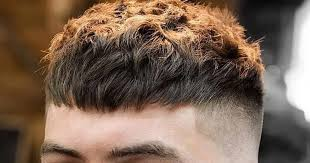
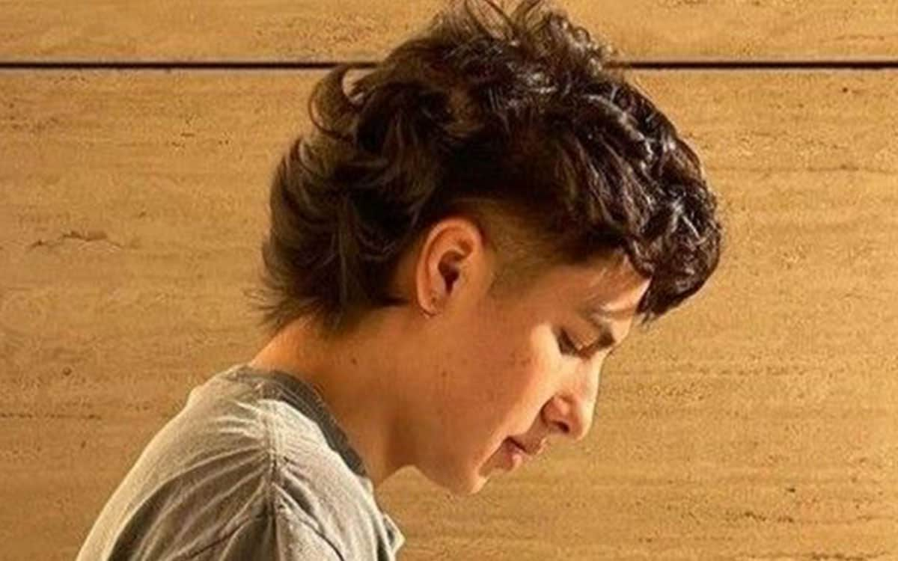
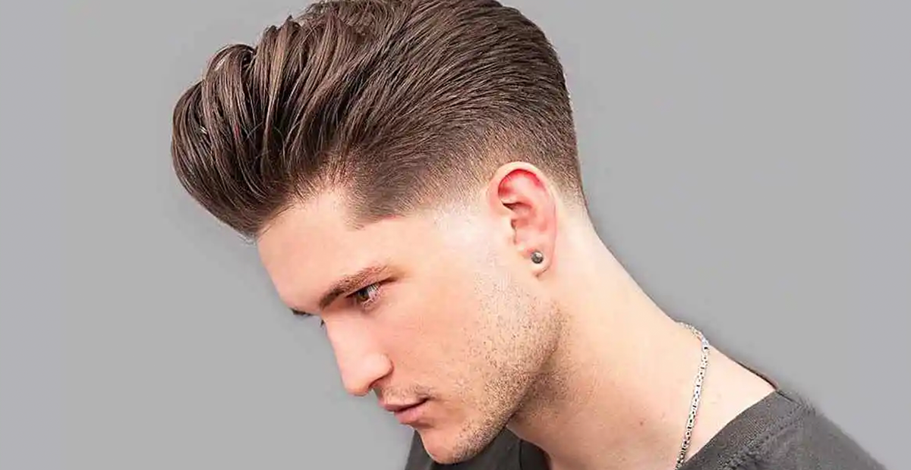
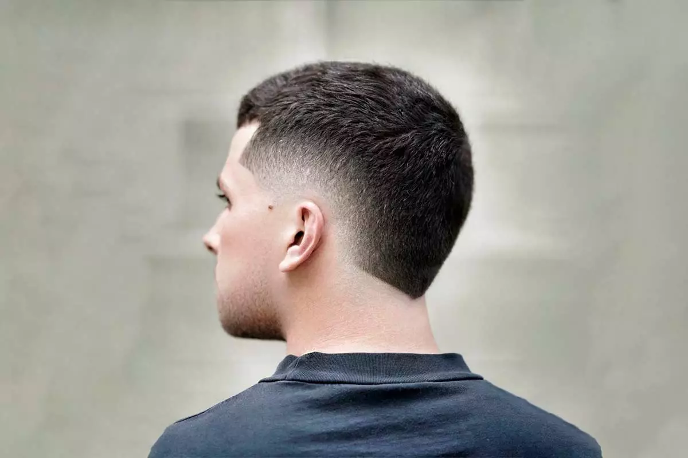

| Nama | Example | Price | Descriptions |
|---|---|---|---|
| French Crop |  | 35k | kayak thomas slebew |
| Mullet |  | 35k | kayak thomas slebew |
| Undercuts |  | 35k | kayak thomas slebew |
| Fades |  | 35k | kayak thomas slebew |
Cukur rambut adalah proses merapikan atau memotong rambut dengan tujuan menjaga penampilan serta kebersihan. Teknik ini dilakukan dengan menggunakan alat seperti gunting, pisau cukur, atau mesin cukur listrik yang dirancang khusus untuk menghilangkan atau merapikan rambut sesuai keinginan. Proses cukur rambut bisa dilakukan di salon, barbershop, atau bahkan di rumah, dengan berbagai gaya yang bisa disesuaikan dengan tren atau preferensi pribadi.
Cukur rambut tidak hanya sekedar aktivitas perawatan rutin, tetapi juga mencerminkan kepribadian dan gaya hidup seseorang. Beberapa orang memilih potongan rambut yang sederhana dan klasik, sementara yang lain suka bereksperimen dengan model yang lebih unik dan modis. Pemilihan gaya cukur rambut biasanya dipengaruhi oleh bentuk wajah, jenis rambut, dan tren yang sedang populer, sehingga menciptakan tampilan yang cocok dan menonjolkan karakteristik masing-masing individu.
Selain untuk penampilan, mencukur rambut juga memiliki manfaat kesehatan.Rambut yang dipangkas secara teratur dapat mencegah ujung rambut bercabang, menjaga kesehatan kulit kepala, serta mencegah timbulnya masalah seperti ketombe atau penumpukan minyak. Dengan melakukan cukur rambut secara berkala, seseorang dapat merasa lebih segar dan percaya diri, baik dalam kehidupan sehari-hari maupun acara-acara penting.